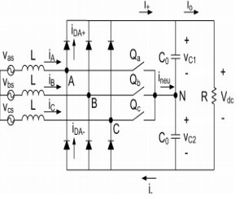
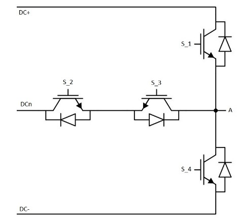
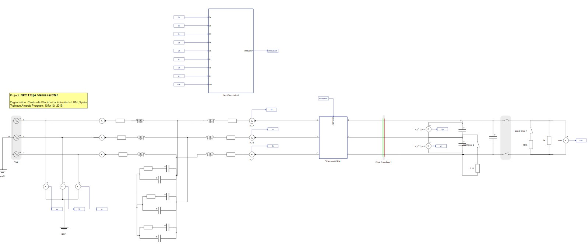
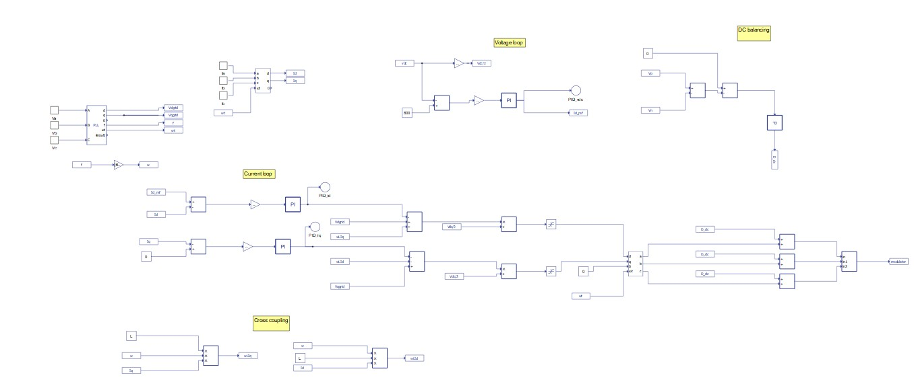
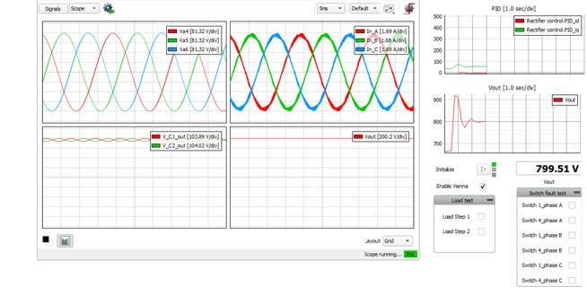
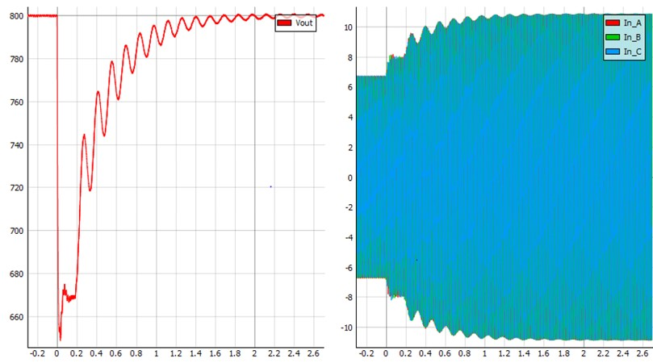
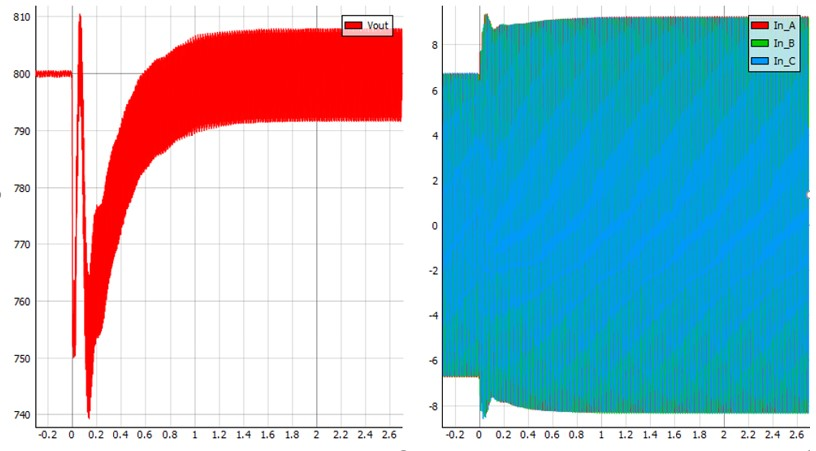
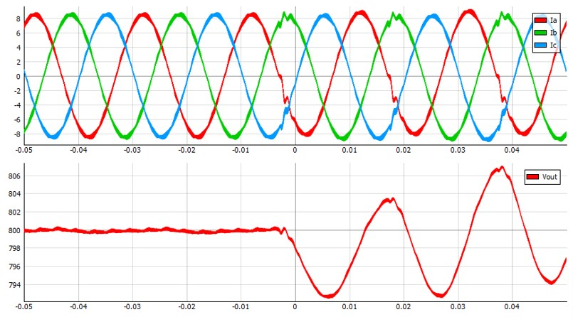
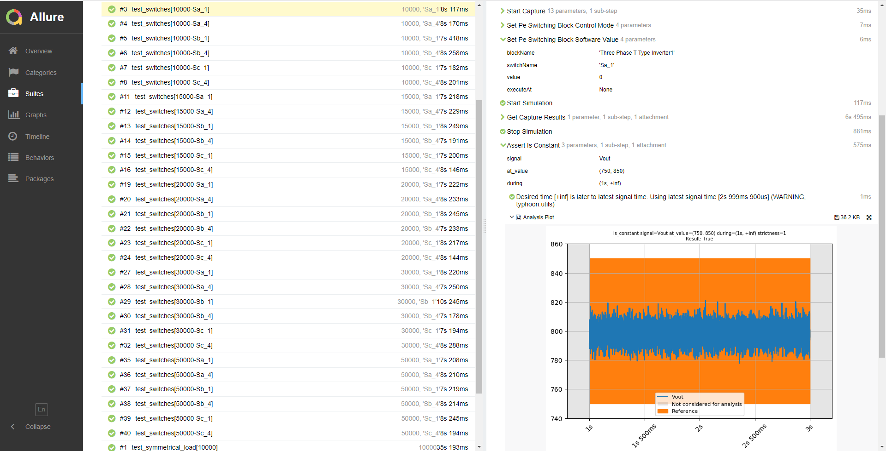

NPC T Type Vienna rectifier
Validation of the reliability of an NPC T Type Vienna rectifiers in shoot-through conditions.
Introduction
There is an increasing demand from the aeronautics industry for highly efficient, compact, and reliable three-phase rectifiers. Conventional rectifiers employed in today's aircraft rely on passive solutions which are extremely robust, but are also heavy and bulky. The active rectifiers employ semiconductors that switch at high frequencies in order to provide control to the rectifier variables, reduce the size of magnetic components, and increase efficiency. The most popular among them is the bidirectional three-phase boost rectifier. The main drawback of this rectifier is poor tolerance to shoot-through of the rectifier bridge leg, which would cause the DC bus to short circuit and a complete failure of the system. The Vienna rectifier is immune to shoot-through of the one switch in the leg due to the inclusion of protective diodes. In this application, a three-phase Vienna rectifier is implemented using three NPC T Type Leg components from the Converters Library. The application demonstrates the high reliability of the Vienna rectifier in two main aspects:
- it maintains a constant output voltage in asymmetric load conditions
- it is immune to short-circuit on the output voltage in case of control errors (switch faults)
Model description
The Vienna rectifier topology is shown in Figure 1. With this topology, if the switch Qa is off and the phase current iA is positive, the phase leg A is clamped to the positive DC link, and therefore, Voltage from phase A to neutral (VAN) is equal to Vdc/2. Similarly, if Qa is off and iA is negative, then VAN will be −Vdc/2. If the Qa is on, phase leg A will be clamped to the DC link neutral point and the VAN will be zero, regardless of iA polarity. The same operating principle applies to both phase B and phase C. This topology is implemented using the NPC T-type inverter legs shown in Figure 2. There are two pairs of complementary switches. Switches S2 and S3 perform the equivalent function of the Q switch, while switches S1 and S4 improve the shape of input currents.


The electrical part of the model is shown in Figure 3. The inverter uses an ideal DC source for powering the DC link. The Vienna rectifier is specific for its two capacitors on the DC side and voltage balancing. Each of the output capacitors is chosen to be 100 µF in order to allow a slow output voltage loop. The grid-side connection of the inverter is implemented using a LC filter. The suggested parameters of the filter for this model are Ci = 3.09 µF, L = 30 mH, Cd = 7.73 µF, and Rd = 13.68 Ω (these parameters are set in the Model Initialization panel).

The control part, shown in Figure 4, consists of voltage (top center) and current regulation loops (center). DC link balancing is also demonstrated (top right).

Typically, the outer (voltage) loop is designed for DC link voltage regulation, while the inner (current) loop is used to control the AC input current. The DC link voltage error is fed to a proportional and integral (PI) regulator, and the output of the PI regulator is fed to the inner current loop as the D-channel current reference (Id_ref). For the unity power factor case, the Q-channel current reference is set to 0. For the three-level neutral point clamping topology, an additional DC voltage balance control loop is required, because, in this case, there are two capacitors at the output and it is important that the output voltage is evenly distributed.
Simulation
This application comes with a pre-built SCADA panel (Figure 5). The panel offers most essential user interface elements (widgets) to monitor and interact with the simulation in runtime. You can customize it freely to fit your needs.

This rectifier is designed so that the voltage on the DC link remains constant regardless of the applied load, in this case 800 V. The simulation starts with a 200 Ω resistive load (R4). Seeing that the control is stable and the output voltage is 800 V, a 300 Ω resistor (R15) can be connected in parallel by checking the Load Step 1 checkbox. After a transient dip of about 2 s, the voltage at the DC link returns to 800 V, as can be seen in Figure 6. The DC link voltage also remains 800 V during asymmetrical loading. If we close the S3 contactor using the “Load Step 2” checkbox, which adds a 150 Ω resistor (R16) model-wise in parallel with C17 output capacitor, the DC link remains relatively close within the 800 V range (+/-4 V). This is shown in Figure 7.


The DC link voltage also remains at 800 V if one of the switches (S1 or S4) is closed, but the current waveform is deformed. This case is shown in Figure 8.

Test automation
The provided test automation script checks the rectifier redundancy while operating with a symmetric load, an asymmetric load, and during open switch faults. Figure 9 shows a test report sample, demonstrating that the DC link voltage remains close to 800 V even when switch Sa_1 is forced open. You can obtain the full report by running the test from TyphoonTest IDE (for easy access press the "Open Test" button from Example Explorer. Virtual HIL is supported).

Example requirements
Table 1 provides detailed information about the file locations and hardware requirements for running the model in real-time, followed by the HIL device resource utilization when running the model using this minimal hardware configuration. This information is provided to help you with running and customizing the model as you see fit.
| Files | |
|---|---|
| Typhoon HIL files | examples\models\aerospace\npc t-type vienna rectifier npc t-type vienna rectifier.tse, npc t-type vienna rectifier.cus examples\tests\103_npc_t_type_vienna_rectifier test_npc_t_type_vienna_rectifier.py |
| Minimum hardware requirements | |
| No. of HIL devices | 1 |
| HIL device model | HIL101 |
| Device configuration | 1 |
| HIL device resource utilization | |
| No. of processing cores | 2 |
| Max. matrix memory utilization | 1.03% (core1) 96.63% (core0) |
| Max. time slot utilization | 15.45% (core1) 60.0% (core0) |
| Simulation step, electrical | 1 µs |
| Execution rate, signal processing | 100 µs |
Authors
[1] Jovana Markovic